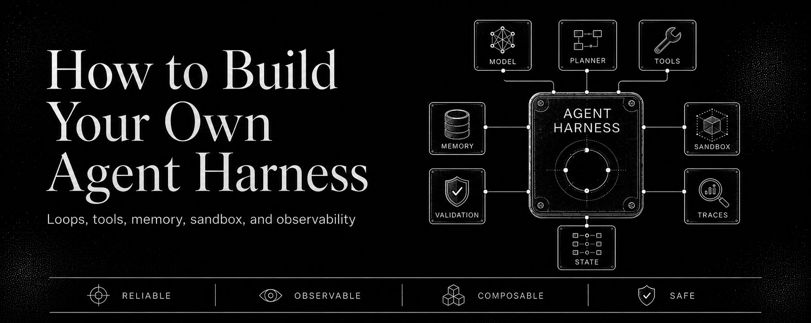
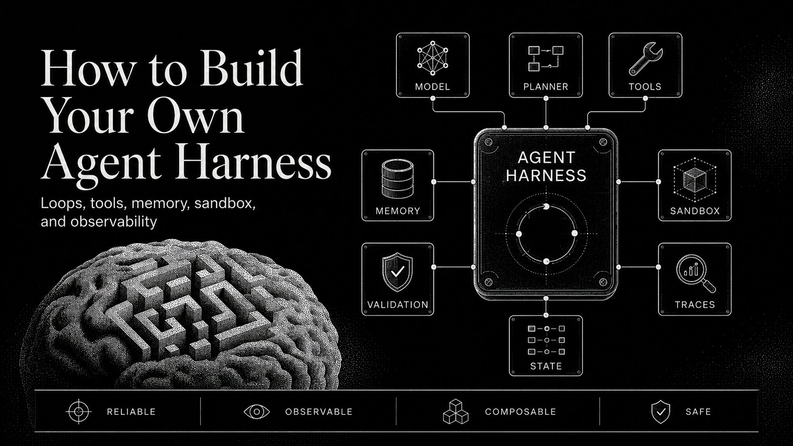
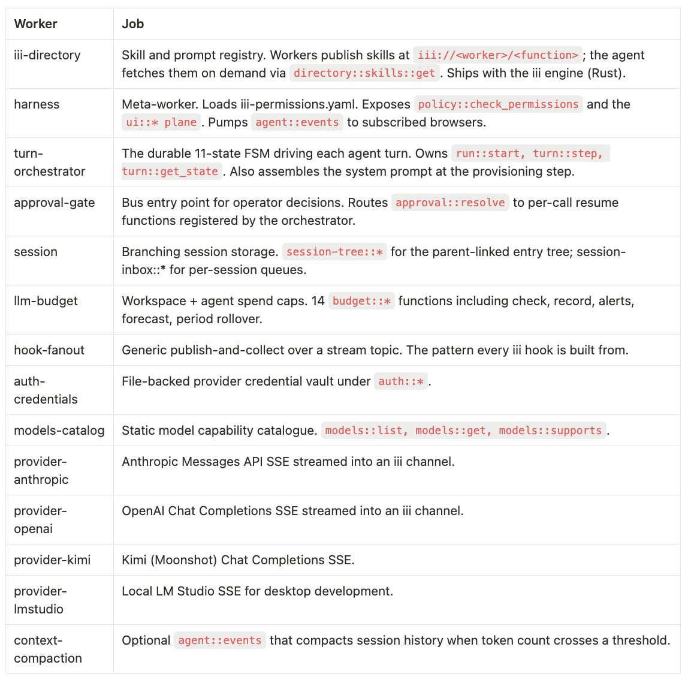

Agent harness 不是框架：把 15 项职责拆成可替换 workers
这篇长帖的核心不是“再发明一个框架”，而是把 agent harness 拆成一组可插拔 workers：模型、权限、预算、审批、会话、上下文压缩、追踪与工具都可以独立替换。
01 / 核心判断
这篇帖子的主张是：agent harness 不该是一个把所有能力打包在一起的 monolith，而应该是一个由多个可替换 worker 组成的基座；你不是 fork 框架，而是在按需装配 worker。
先试顺序
- 先看职责清单：一个生产级 harness 至少要做 15 件事。
- 再看组件拆分：turn-orchestrator / approval-gate / budget / auth / provider / session / compaction 等。
- 最后看替换逻辑：每层通过同一 trigger / function id 接入，替换不会拖垮全局。
怎么读这张卡
把它当成一篇“agent 基座架构论”：它讨论的不是某一个模型，而是让 agent 能够长期、可观测、可治理地运行的整套基础设施。
将 harness 拆成 workers，而不是把所有职责塞在一个框架里。
每一层都能独立替换、独立版本化、独立发布。
薄 harness 和厚 harness 只是安装了多少 worker 的区别。
02 / 图片里在说什么



03 / 15 项职责和 11 个 workers
职责清单
接收 turn、解析凭据、查看模型能力、驱动状态机、加载 skills、组装 system prompt、流式输出、审批、预算、hooks、session、压缩、事件流、追踪。
治理层
approval-gate、llm-budget、policy、auth-credentials 负责把“能跑”变成“可控地跑”。
执行层
turn-orchestrator、provider、session、context-compaction 负责真正把一回合跑完。
基础层
iii-directory、harness、agent::events 这些基础设施把 worker 接到统一总线上。
04 / 为什么“slider 不是 fork”
可以替换的层
- 模型目录：从静态改成实时 API。
- provider：替换不同模型供应商。
- skills：换成本地或私有文档源。
- policy / approval：换成 Slack、OPA、Cedar 或自定义 DSL。
为什么重要
因为团队真正想换的通常不是“模型本身”，而是围绕模型的治理、权限、预算和观测。worker 化之后，替换不再意味着重写整套 harness。
05 / 适合谁看
- Agent 平台工程师：看系统如何拆层、解耦和维持可观测性。
- 要做审批 / 预算 / policy 的团队：看如何把治理做成可替换 worker。
- 想从框架迁出的人：看“替换一个 worker，不重写全栈”的思路。
agent harness 的本质是可替换的 worker 组合。
你得接受更细的架构边界，而不是把所有东西塞进一个框架里。
长期维护时，替换一层不必翻整座楼。
06 / 原帖与相关入口
- X 原帖：https://x.com/mfpiccolo/status/2060069083878408689
- iii workers：https://github.com/iii-hq/workers
- iii engine：https://github.com/iii-hq/iii
这不是框架 fork 的故事，而是 worker 组合的故事。
trigger、worker、approval、budget、session、trace。
你不是 adopt 一个 harness，而是在组装自己的 harness。